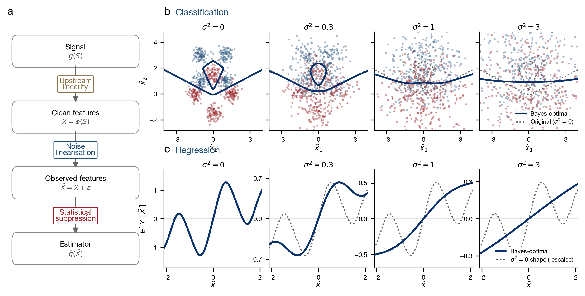
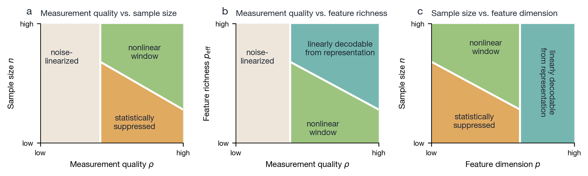
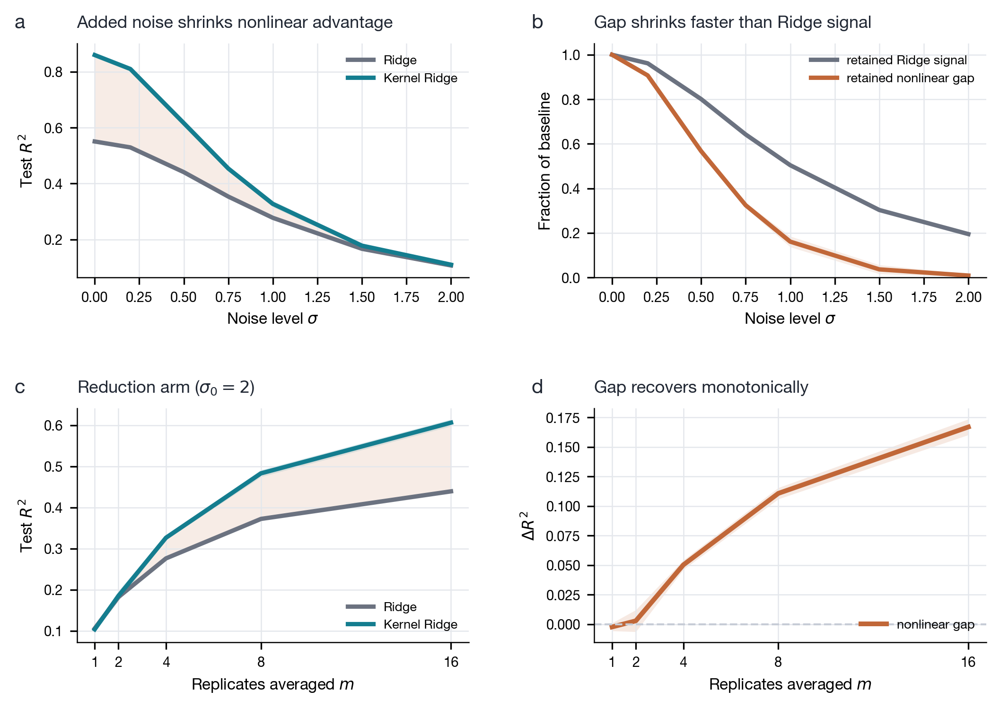
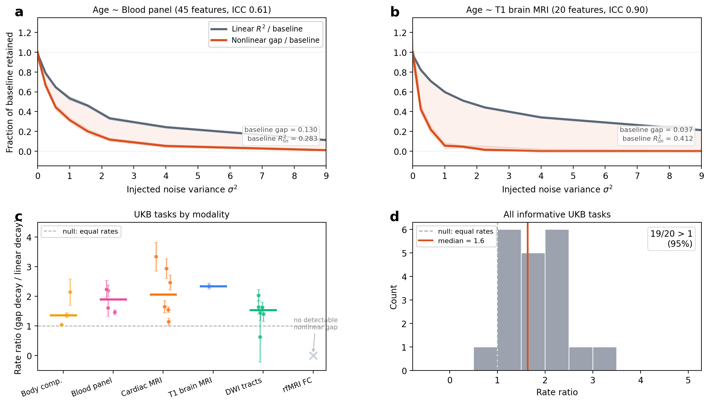

The core excess-risk identity and its classification counterpart are machine-verified in Lean 4 with Mathlib, plus new modules for Mehler's formula, Hermite orthogonality, and Pinsker's inequality.
Abstract
On biomedical tabular data, flexible models such as deep networks, gradient-boosted trees, and kernel methods are repeatedly matched or beaten by linear and logistic regression given the same features. The usual reaction is to treat this as a model-side shortfall, to be fixed with more data, a better architecture, or tuning, on the assumption that the nonlinear structure is there and the model has failed to capture it. We argue that these fixes cannot help when the binding limit is the measurement rather than the model, as it frequently is in biomedicine. Additive noise blurs the population-optimal predictor, and because blurring removes a function's fine, rapidly varying detail before its broad shape, it erases nonlinear structure faster than linear structure. A degree-$k$ interaction is attenuated by the $k$-th power of feature reliability, while the linear part is attenuated only once. At the reliabilities typical of biomedical measurement, the nonlinear advantage can vanish even when the underlying biology is strongly nonlinear, and what the noise removes cannot be recovered by a larger cohort or a more flexible model, only by better measurement. The nonlinearity is hidden, not absent, and a tie between linear and flexible models is not by itself a verdict on the biology. These pieces are classical, drawn from measurement-error statistics, psychometrics, and Gaussian analysis, and we assemble them into an exact excess-risk identity. Measurement reliability is one of three conditions, alongside sample size and feature representation, that must align for a flexible model to help, and together they leave only a narrow window that most biomedical tasks fall outside. Across 140 UK Biobank tasks, the gap between flexible and linear models, where it exists, carries the predicted noise signature, and the three conditions can be separated by intervention but not by a benchmark alone.
Problem
On biomedical tabular data, flexible nonlinear models rarely outperform linear or logistic regression. The authors ask whether measurement noise, rather than model shortcomings, removes recoverable nonlinear structure.
Approach
Using Hermite expansions and Mehler's formula under Gaussian assumptions, the authors derive an exact identity: the excess risk of the best linear predictor over the Bayes predictor is a sum of squared Hermite coefficients, each weighted by products of feature reliabilities raised to the interaction order. They frame measurement reliability, sample size, and feature representation as three conditions that must all hold for a flexible model to help. The identity and its classification counterpart are formalized in Lean 4 with Mathlib, using 12 additional modules for missing results. Predictions are tested on controlled benchmarks and 140 UK Biobank tasks.

Figure 1: Measurement noise straightens the optimal predictor. (a) The prediction pipeline runs from biological signal S through feature extraction X=g(S) and measurement \tilde{X}=X+\eta to a finite-sample estimator. (b) For classification, the optimal decision boundary at four noise levels, flattening from a curved boundary toward a line. (c) For regression, the optimal predictor E[Y\mid\tilde{X

Figure 2: The window in which flexible models help. Three slices through the space of measurement reliability, sample size, and feature dimension. A nonlinear advantage exists only where reliability, sample size, and representation all permit it (green). Its three failure regions are low reliability (noise-linearized), too small a sample (statistically suppressed), and an already-linear representa
Results
The Lean development is 22 files that compile with no sorries and no custom axioms; the σ^4 scaling claim is not formalized. In experiments, the nonlinear gap shrinks faster than the linear signal under injected noise and recovers when replicate measurements are averaged. UK Biobank gaps, where present, show this noise signature.

Figure 3: Noise hides nonlinear structure, and reducing it brings the structure back. Ridge regression (grey) and polynomial-kernel ridge (teal) on a controlled benchmark; bands are \pm 1 s.e.m. across 12 runs. (a) Both R^{2} curves fall as noise is added. (b) The nonlinear gap (orange) falls faster than the linear signal (grey), each normalized to its baseline. (c) Averaging m replicates restores

Figure 4: The signature on UK Biobank tasks. (a,b) Normalized decay curves for age predicted from blood features (45 features, ICC 0.61) and from T1 brain MRI features (20 features, ICC 0.90); in both, the nonlinear gap falls faster than the linear signal. (c) Decay ratios by modality; resting-state functional connectivity (ICC 0.2–0.3) shows no measurable baseline gap. (d) Distribution of decay r
Reliability ρ
Linear (k=1)
Pairwise (k=2)
Three-way (k=3)
0.9
90%
81%
73%
0.7
70%
49%
34%
0.5
50%
25%
12%
0.3
30%
9%
3%
Fraction of structure retained by interaction order at a given feature reliability